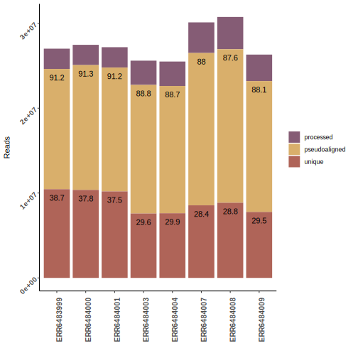
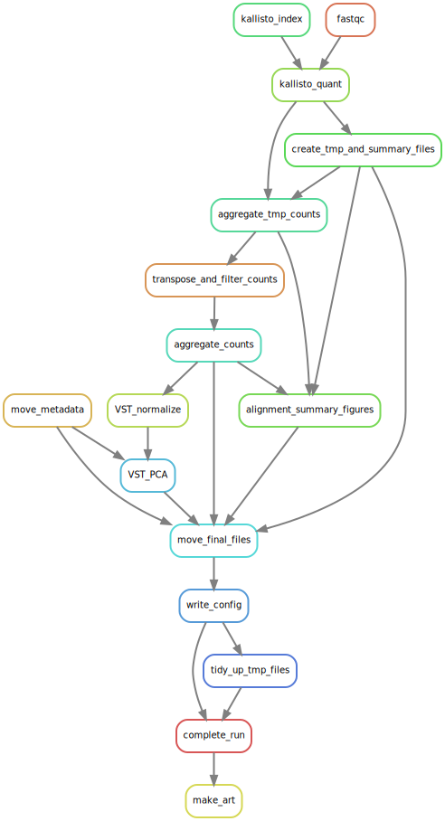
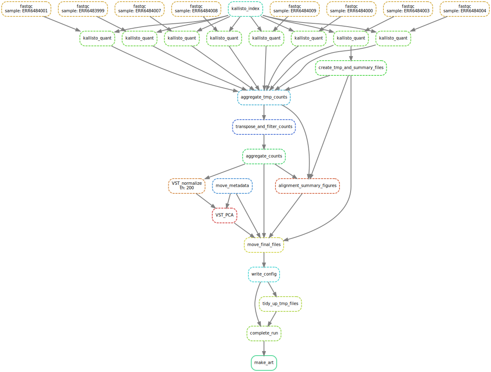
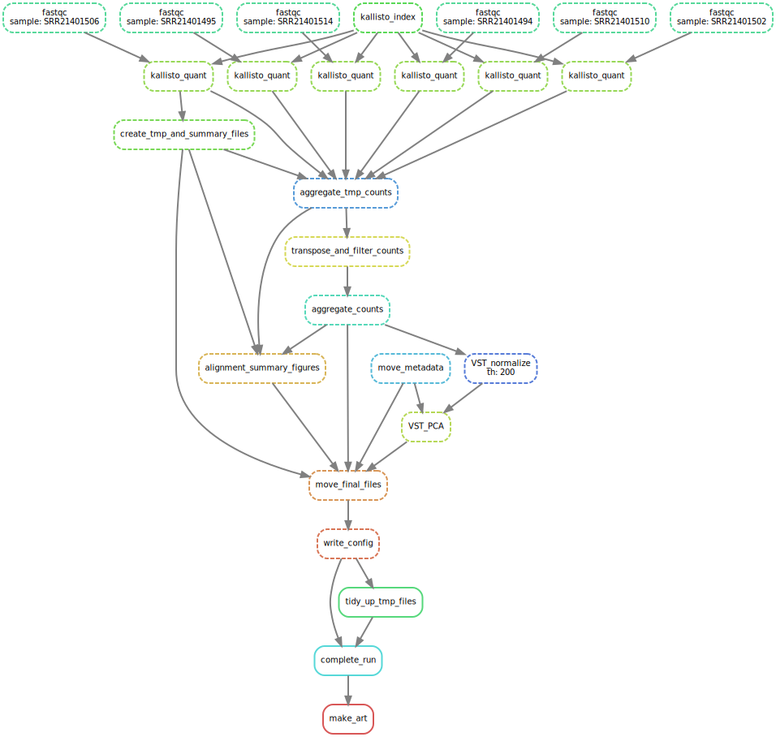
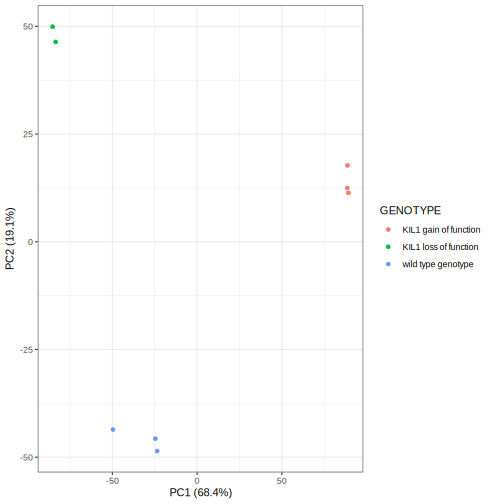
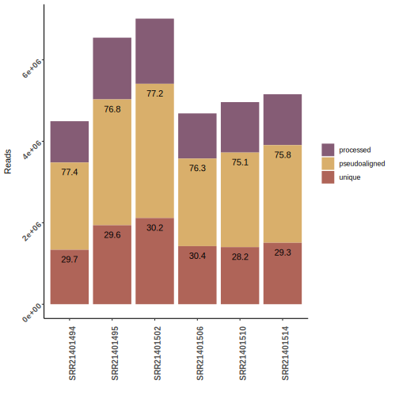
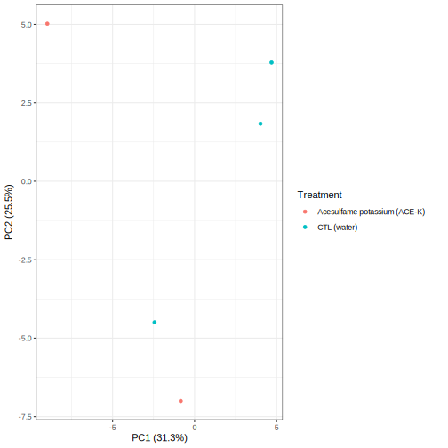

Four things to do with Quarto
I’ve been thinking of learning Quarto, the open-source scientific and technical publishing system for awhile now so I thought I would just jump in and create a first post detailing what I actually want to use Quarto for. I’m a bioinformatican by trade and a few of my projects have ended in web apps like RShiny, which are great for allowing the biologist to access, visualize and query the analysis and data. Recently though I’ve been thinking that instead of making web-apps and dealing with things like hosting and security it might be easier for everyone involved if I just create reports instead. Interactive reports that can be placed on a shared directory or standalone HTML that can be sent via e-mail automatically when the analysis is done. There is lots of things to use Quarto for like creating this blog but for conceptual symmetry here are four:
- Discuss figures alongside generated text
- Embed widgets like plotly plots
- Create smart tables
- Allow for downloads
If your intreasted in the actual markdown code that was used to produce this webpage then you can find here on my github.
Discuss figures alongside generated text
I’m going to break my four things about quarto rule straight out the gate as this is really two things. A bioinformatic reports are usually going to numerous figures and will have to be shown next to text in relatively neat way. Automatically generated reports also is going to contain some automatically generated text, loaded into the report from a nearby config file.
The figure was produced from automated snakmake pipeline which pseduoaligned maize RNA-Seq reads to the maize transcriptome. The reason is pseduoalined is that instead of aligning reads to transcriptome like a aligner, kallisto just sort of matches the reads to a part of the transcriptome with a few additional steps. I’ll go into that in more detail when I do my blog post on the snakemake kallisto pipeline.

So the figure looks fine. Most biologists have seen these figures many times before and would in a moment tell that the proportion of reads pseduoaligned across all samples is above 80% so no problems here. Say I need to show multiple figures for multiple runs, giving each figure a empty chunk of web page to hang out in would get ugly fast so I can use quarto markdown to get the figures shown side by side.
Looks good but if I had more runs to show, and more figures to describe each run it could get confusing fast. It would be beneficial to only show one runs figure at a time and get the user to click which figure they want to see. This can be done using a panel tab, shown below along with the markdown code to produce it.
::: {.panel-tabset}
## Dataset A
::: {.panel-tabset}
## Pseudoalignment summary

## PCA

:::
## Dataset B
::: {.panel-tabset}
## Pseudoalignment summary

## PCA

:::
:::
:::
The panel tab
Embded wedgits
Create smart tables
Allow for downloads
Below is rules diagram from my snakemake pipeline and it looks okay but its large with a lot of things going on. The figures is made automatically from the snakemake automation pipeline and the fact it looks like it makes sense means the I set up the snakemake correctly.

The figure is very very large and longer then wide so it would be good to see if the figure could be smaller aligned to the left with some sort of descriptive text to the right of the figure.
Better DAG
Heres the figure smaller and aligned to the left but cant figure out how to get the figure in one col and the text in another. I see some folk tackle this with some latex css stuff but id really rather not. Will check to see if I can do something with captions.
Below is a panel tabset which are really good for getting multiple figures onto a page without stretching it out to much.


What would be really cool is a dataset within a dataset. Which I will try to do down below with some more figures I got from the kallisto snakemake running the



:::
Create a list
These are the movies I saw in 2022 that I can remember on the 7th of January 2023. There must be more then this. None of these are even proper comedies…
Emma
NOPE
Everything, Everywhere, All the Time
The Batman
Glass Onion
Pinocchio
Ponyo
Wendell and Wild
Embed a widget
I made some html widgets during my work on a snakemake NGS project so I’m going to try to embed them here. Depending on how it looks, I might change the snakemake to save plotly plots as Rdata
Add a wee table
Here is the pseudoalignment summary tables.
Add a smart table
Here is some random metadata table you can see I’ve added tooltips
Download a file
If you like that pseudoalignment summary table then you can download it here